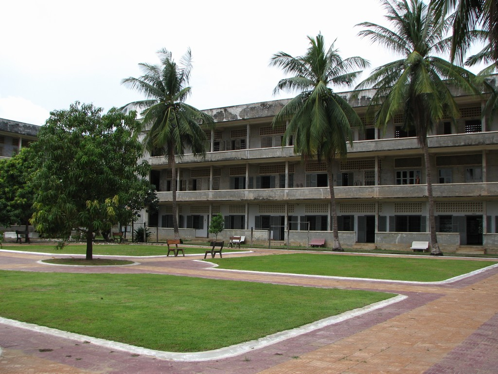

គ្រាងងឹត
របបខ្មែរក្រហមបានឆក់យកជីវិតប្រជាជនជិតមួយភាគបួននៃប្រជាជាតិ — យើងរំលឹកពួកគេដោយការគោរព។
របបខ្មែរក្រហម
នៅថ្ងៃទី ១៧ ខែមេសា ឆ្នាំ ១៩៧៥ ភ្នំពេញបានដួលរលំ។ របបខ្មែរក្រហមបានបណ្តេញប្រជាជនចេញពីទីក្រុង ហើយដាក់របបកសិកម្មដ៏ឃោរឃៅ។ ក្នុងរយៈពេលតិចជាងបួនឆ្នាំ ប្រជាជនប្រហែល ១,៧ ទៅ ២ លាននាក់ — ជិតមួយភាគបួននៃប្រជាជាតិ — បានស្លាប់ដោយសារការអត់ឃ្លាន ការធ្វើការហួសកម្លាំង ការធ្វើទារុណកម្ម និងការប្រហារជីវិត។
យើងរំលឹកពួកគេនៅទីនេះ ដោយការគោរព និងដោយការសន្យាថា ការចងចាំរបស់ពួកគេមិនត្រូវបានបំភ្លេចឡើយ។
ទួលស្លែង
ទួលស្លែង — អតីតវិទ្យាល័យមួយ ដែលត្រូវបានប្រែក្លាយទៅជាពន្ធនាគារសួរចម្លើយ S-21។ មនុស្សពី ១៥,០០០ ទៅ ២០,០០០ នាក់ ត្រូវបានឃុំខ្លួននៅទីនេះ — ក្នុងចំណោមនោះ មានតែ ១២ នាក់ប៉ុណ្ណោះដែលបានរួចជីវិត។
សព្វថ្ងៃ ទួលស្លែងជាសារមន្ទីរឧក្រិដ្ឋកម្មប្រល័យពូជសាសន៍ — ហើយបណ្ណសាររបស់វាត្រូវបានចុះក្នុងបញ្ជី «ការចងចាំរបស់ពិភពលោក» របស់យូណេស្កូ។
សិល្បករ និងការរំលឹក
របបនេះបានសម្លាប់សិល្បករជាប្រព័ន្ធ — ប្រហែល ៩០% នៃអ្នករបាំ អ្នកភ្លេង និងសិប្បករ បានស្លាប់។ របាំព្រះរាជទ្រព្យ «ស្ទើរតែរលាយបាត់»។
នៅថ្ងៃទី ៧ ខែមករា ឆ្នាំ ១៩៧៩ របបត្រូវបានផ្តួលរំលំ។ ហើយក្នុងរយៈពេលប៉ុន្មានខែ អ្នករបាំដែលនៅរស់រានមានជីវិត បានចាប់ផ្តើមរាំម្តងទៀត — ដោយការអត់ធ្មត់ និងដោយក្តីសង្ឃឹម។ សិល្បៈរបស់ពួកគេ មិនបានបាត់បង់ដោយឥតប្រយោជន៍ឡើយ។